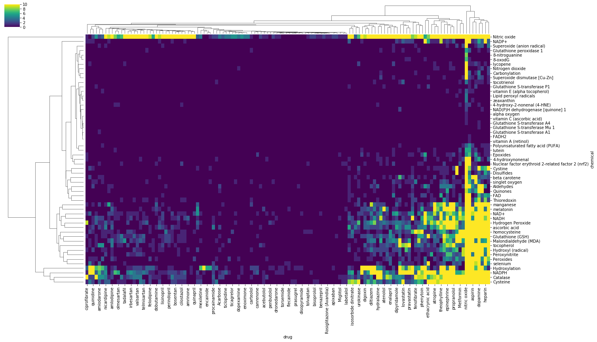

Finding Occurrences of Chemicals and Drugs in PubMed Abstracts
Searches the ElasticSearch index created during CaseOLAP pipeline run for curated list of Drugs and Chemicals related to oxidative stress
Output:
- Chemical_PMID_occurances.csv: CSV table where each row is the occurance of a chemical in PubMed
- Drug_PMID_occurances.csv: CSV table where each row is the occurance of a drug in PubMed
from elasticsearch import Elasticsearch
from elasticsearch_dsl import Search, Q
import pandas as pd
from itertools import product
import seaborn as sns
Load Drug and Chemical lists, initialize Elastic Search
- Requires elastic search engine to be running on cluster. Must have PMID index
chemical_list_df = pd.read_csv('Oxidative Stress Text Mining Targets 4.1 - Summary of Oxidative Stress.csv')
chemical_list_df.head()
|
Biological Events of Oxidative Stress |
Molecular and Functional Categories |
Molecule/Enzyme/Protein |
MeSH Heading |
MeSH Supplementary |
MeSH tree numbers |
Chemical Formula |
Examples |
Pharm Actions |
Tree Numbers |
References |
| 0 |
Initiation of Oxidative 1 |
Reactive Oxygen Species (ROS) |
Superoxide (anion radical) |
Superoxides |
NaN |
D01.248.497.158.685.750.850; D01.339.431.374.8... |
O2- |
Superoxide, Hydrogen Peroxide |
Oxidants |
D27.720.642,\nD27.888.569.540 |
PMID: 25547488 |
| 1 |
2 |
NaN |
Hydrogen Peroxide |
Hydrogen Peroxide |
NaN |
D01.248.497.158.685.750.424; D01.339.431.374.4... |
H2O2 |
NaN |
Anti-Infective Agents, Local |
D27.505.954.122.187 |
NaN |
| 2 |
NaN |
NaN |
NaN |
NaN |
NaN |
NaN |
NaN |
NaN |
Oxidants |
D27.720.642,\nD27.888.569.540 |
NaN |
| 3 |
3 |
NaN |
Hydroxyl (radical) |
Hydroxyl Radical |
NaN |
D01.339.431.249; D01.248.497.158.459.300; D01.... |
HO |
NaN |
Oxidants |
D27.720.642,\nD27.888.569.540 |
NaN |
| 4 |
4 |
NaN |
alpha oxygen |
None listed |
NaN |
NaN |
NaN |
NaN |
NaN |
NaN |
NaN |
drug_list_df = pd.read_csv('Drug list total 04.05.19 - Overview Drug list.csv')
drug_list_df.head()
|
Drug Category |
# |
Name |
Synonyms |
MeSH Descriptor |
MeSH tree(s) |
Common adverse effects |
Dosage (freq/amount/time/delivery) |
Duration (time) |
Pham Action |
| 0 |
Anticoagulants |
1 |
heparin |
['Calciparine', 'Eparina', 'heparina', 'Hepari... |
heparin |
D09.698.373.400 |
Thrombocytopenia, Cerebral haemorrhage, Haemog... |
1/18U/kg/iv |
2 days |
Anticoagulants, \nFibrinolytic Agents |
| 1 |
NaN |
2 |
warfarin |
['4-Hydroxy-3-(3-oxo-1-phenylbutyl)coumarin', ... |
warfarin |
D03.383.663.283.446.520.914\nD03.633.100.150.4... |
Haemorrhage, Haematoma, anaemia, Epistaxis, hy... |
1/2-10mg/day/po |
As needed |
Anticoagulants, \nRodenticides |
| 2 |
Thrombolytics |
3 |
streptokinase |
['Streptokinase C precursor'] |
streptokinase |
D08.811.277.656.300.775\nD12.776.124.125.662.537 |
blurred vision, confusion, dizziness, fever, s... |
1/1,500,000 IU/iv |
60min |
Fibrinolytic Agents |
| 3 |
NaN |
4 |
urokinase |
['U-plasminogen activator', 'uPA', 'Urokinase-... |
Urokinase-Type Plasminogen Activator |
D08.811.277.656.300.760.910\nD08.811.277.656.9... |
bleeding gums, coughing up blood, dizziness, h... |
1/4,000,000U/iv |
10min |
NaN |
| 4 |
NaN |
5 |
tpa |
['Alteplasa', 'Alteplase (genetical recombinat... |
Tissue Plasminogen Activator |
D08.811.277.656.300.760.875\nD08.811.277.656.9... |
NaN |
1/0.9mg/kg/iv |
60min |
Fibrinolytic Agents |
es = Elasticsearch()
Find PMIDs associated with every combination of drugs and chemicals via elastic search
# All combinations of drugs and chemicals
drug_chemicals = product(
drug_list_df['Name'].dropna().unique(),
chemical_list_df['Molecule/Enzyme/Protein'].dropna().unique()
)
matches = pd.DataFrame()
for (drug, chemical) in drug_chemicals:
mol_matches = {
'PMID': [],
'title': [],
}
# Match drug and chemical
q = Q("match_phrase", abstract=drug) & Q("match_phrase", abstract=chemical)
# Search
hits = Search(
using=es,
index="pubmed"
).params(
request_timeout=300
).query(q)
for h in hits:
mol_matches['PMID'].append(h.pmid)
mol_matches['title'].append(h.title)
match_df = pd.DataFrame.from_dict(mol_matches)
match_df['drug'] = drug
match_df['chemical'] = chemical
matches = matches.append(match_df)
matches.head()
|
PMID |
title |
drug |
chemical |
| 0 |
9655178 |
Association of myeloperoxidase with heparin: o... |
heparin |
Hydrogen Peroxide |
| 1 |
10187813 |
Oxidation of methionine residues in antithromb... |
heparin |
Hydrogen Peroxide |
| 2 |
30879129 |
Heparin prevents oxidative stress-induced apop... |
heparin |
Hydrogen Peroxide |
| 3 |
8181006 |
Evidence of a selective free radical degradati... |
heparin |
Hydrogen Peroxide |
| 4 |
1321628 |
Heparin: does it act as an antioxidant in vivo? |
heparin |
Hydrogen Peroxide |
article_count = pd.DataFrame(
matches.groupby(['drug', 'chemical']).PMID.nunique()
).reset_index().rename(columns={'PMID': 'Article Count'})
piv_count = article_count.pivot_table(
index='chemical',
columns='drug',
values='Article Count',
fill_value=0
)
sns.clustermap(
piv_count,
figsize=(22,13),
cmap='viridis'
)
<seaborn.matrix.ClusterGrid at 0x7fe7382b6588>

Find PMIDS assocaited with drugs and chemicals via elastic search
drug_matches = pd.DataFrame()
for drug, m_df in drug_list_df.groupby('Name'):
drug_match = {
'PMID': [],
'title': [],
'abstract': [],
'MeSH': []
}
hits = Search(
using=es,
index="pubmed"
).params(
request_timeout=300
).query(
"match_phrase",
abstract=drug,
)
for h in hits:
drug_match['PMID'].append(h.pmid)
drug_match['title'].append(h.title)
drug_match['abstract'].append(h.abstract)
drug_match['MeSH'].append(h.MeSH)
drug_match_df = pd.DataFrame.from_dict(drug_match)
drug_match_df['drug'] = drug
drug_matches = drug_matches.append(drug_match_df)
drug_matches.head()
|
MeSH |
PMID |
abstract |
title |
drug |
| 0 |
[Actinomycetales, chemistry, enzymology, Adeno... |
8784428 |
a phosphotransferase which modifies the alpha ... |
Acarbose 7-phosphotransferase from Actinoplane... |
Acarbose |
| 1 |
[Acarbose, Adult, Blood Glucose, metabolism, C... |
6350115 |
in a double blind study we have compared the e... |
Effect of acarbose, pectin, a combination of a... |
Acarbose |
| 2 |
[Acarbose, Adult, Aged, Blood Glucose, metabol... |
9663365 |
acarbose is an alpha glucosidase inhibitor app... |
Effects of beano on the tolerability and pharm... |
Acarbose |
| 3 |
[Acarbose, administration & dosage, Animals, B... |
11779583 |
as alpha glucosidase inhibitor, the antidiabet... |
Chronic acarbose-feeding increases GLUT1 prote... |
Acarbose |
| 4 |
[Acarbose, Aged, Blood Glucose, metabolism, Di... |
9428831 |
to compare the therapeutic potential of acarbo... |
Efficacy of 24-week monotherapy with acarbose,... |
Acarbose |
drug_matches.to_csv('Drug_PMID_occurances.csv', index=False)
chem_matches = pd.DataFrame()
for chemical, m_df in chemical_list_df.groupby('Molecule/Enzyme/Protein'):
chem_match = {
'PMID': [],
'title': [],
'abstract': [],
'MeSH': []
}
hits = Search(
using=es,
index="pubmed"
).params(
request_timeout=300
).query(
"match_phrase",
abstract=chemical,
)
for h in hits:
chem_match['PMID'].append(h.pmid)
chem_match['title'].append(h.title)
chem_match['abstract'].append(h.abstract)
chem_match['MeSH'].append(h.MeSH)
chem_match_df = pd.DataFrame.from_dict(chem_match)
chem_match_df['chemical'] = chemical
chem_matches = chem_matches.append(chem_match_df)
chem_matches.head()
|
MeSH |
PMID |
abstract |
title |
chemical |
| 0 |
[] |
31368101 |
coronary spasm plays an important role in the ... |
Association of East Asian Variant Aldehyde Deh... |
4-hydroxy-2-nonenal (4-HNE) |
| 1 |
[Acetylcholinesterase, metabolism, Aldehydes, ... |
10463393 |
we have investigated the effect of soman induc... |
Increased levels of nitrogen oxides and lipid ... |
4-hydroxy-2-nonenal (4-HNE) |
| 2 |
[Aldehydes, chemistry, Amines, chemistry, Benz... |
8448343 |
the reaction of trans 4 hydroxy 2 nonenal (4 h... |
Pyrrole formation from 4-hydroxynonenal and pr... |
4-hydroxy-2-nonenal (4-HNE) |
| 3 |
[Animals, Blood-Brain Barrier, metabolism, pat... |
29775963 |
brain ischemic preconditioning (ipc) with mild... |
Brain ischemic preconditioning protects agains... |
4-hydroxy-2-nonenal (4-HNE) |
| 4 |
[Alzheimer Disease, drug therapy, enzymology, ... |
30218858 |
excessive production of amyloid β (aβ) induced... |
Neuro-protective effects of aloperine in an Al... |
4-hydroxy-2-nonenal (4-HNE) |
chem_matches.to_csv('Chemical_PMID_occurances.csv', index=False)
chem_matches.merge(drug_matches[['PMID', 'drug']])
|
MeSH |
PMID |
abstract |
title |
chemical |
drug |
| 0 |
[Anaphylaxis, metabolism, physiopathology, Ani... |
8576313 |
nitric oxide, synthesized from the guanidino g... |
Role of nitric oxide in anaphylactic shock. |
Nitric oxide |
nitric oxide |
| 1 |
[Animals, Blotting, Western, Denervation, Immu... |
10391455 |
nitric oxide may be liberated as an inflammato... |
Evidence for nitric oxide and nitric oxide syn... |
Nitric oxide |
nitric oxide |
| 2 |
[Administration, Inhalation, Adult, Aged, Atri... |
15891329 |
to compare hemodynamic and gasometric variable... |
Lack of alteration of endogenous nitric oxide ... |
Nitric oxide |
nitric oxide |
| 3 |
[Administration, Inhalation, Coronary Artery B... |
8614135 |
increased pulmonary vascular resistance may gr... |
Effective control of pulmonary vascular resist... |
Nitric oxide |
nitric oxide |
| 4 |
[1-Methyl-3-isobutylxanthine, pharmacology, An... |
9722153 |
the structures capable of synthesizing cyclic ... |
Distribution of nitric oxide synthase and nitr... |
Nitric oxide |
nitric oxide |
| 5 |
[Amino Acid Oxidoreductases, metabolism, Anima... |
7543936 |
in the myenteric plexus of the guinea pig ileu... |
Analysis of connections between nitric oxide s... |
Nitric oxide |
nitric oxide |
| 6 |
[Animals, Humans, Hypertension, metabolism, ph... |
9914862 |
nitric oxide is hypothesized to be an inhibito... |
Neural mechanisms in nitric-oxide-deficient hy... |
Nitric oxide |
nitric oxide |
| 7 |
[Amino Acid Oxidoreductases, biosynthesis, Ani... |
7532824 |
nitric oxide is produced in the cns by both co... |
Modulation of inducible nitric oxide synthase ... |
Nitric oxide |
nitric oxide |
| 8 |
[Administration, Inhalation, Animals, Drug Adm... |
12594148 |
pulsed administration of nitric oxide has prov... |
Administration of nitric oxide into open lung ... |
Nitric oxide |
nitric oxide |
| 9 |
[Adult, Female, Humans, Luminescent Measuremen... |
10367927 |
nasal nitric oxide is present in high concentr... |
Nitric oxide accumulation in the nonventilated... |
Nitric oxide |
nitric oxide |